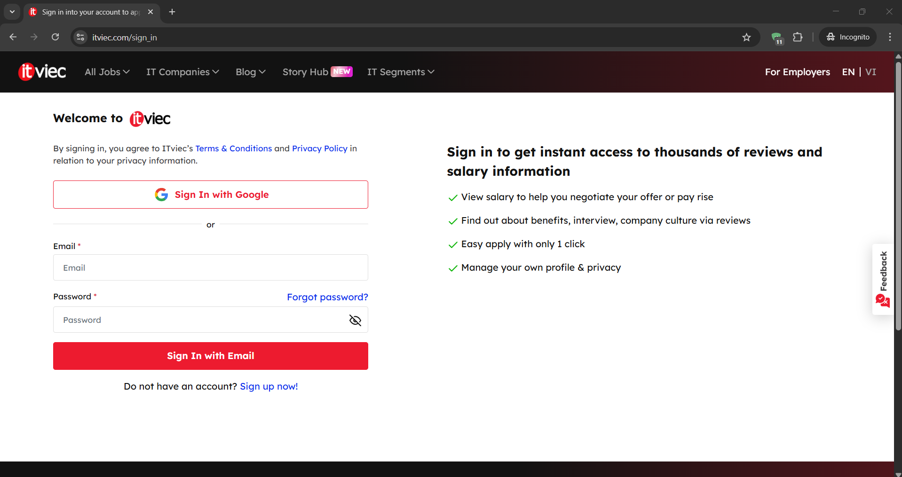
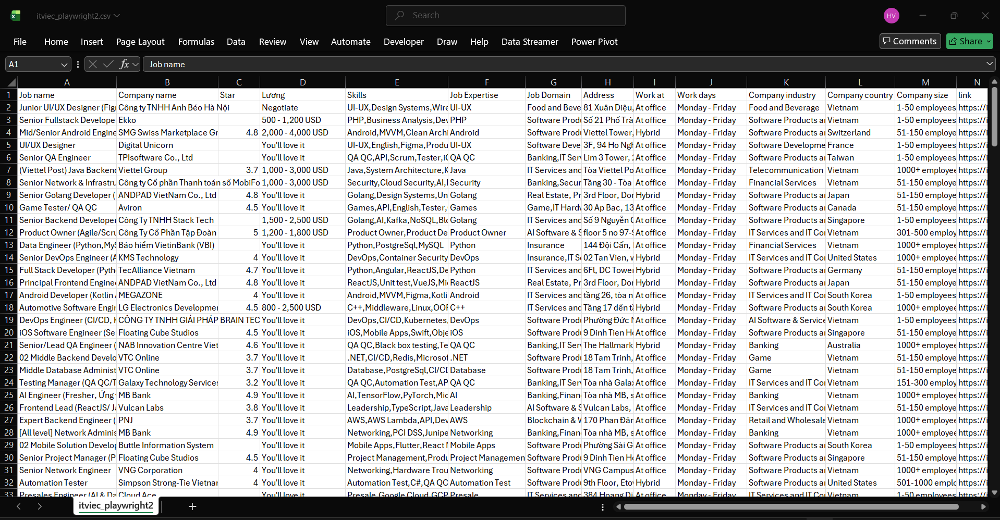

ITViec Job Scraper
Video Demo
Demo quá trình scraping dữ liệu việc làm IT từ ITViec
Trang đăng nhập:

Giao diện đăng nhập ITViec trước khi thực hiện scraping
Website gốc:

Giao diện trang tuyển dụng ITViec với danh sách việc làm IT
Quá trình thực thi:

Terminal hiển thị quá trình scraping dữ liệu từ ITViec
Kết quả thu được:

Dữ liệu việc làm IT được trích xuất và lưu vào file Excel
Jobs
Việc làm được crawl
IT
Lĩnh vực tuyển dụng
Excel
Định dạng xuất
Auto
Tự động hóa
Công nghệ sử dụng:
Kỹ năng chính
Python Programming
Selenium, BeautifulSoup, Pandas, Requests
Web Scraping
Data extraction, Browser automation, API integration
Data Processing
CSV, Excel, JSON, Data cleaning & transformation
Wireshark
Network protocol analysis, Packet capturing, Traffic inspection